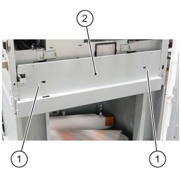
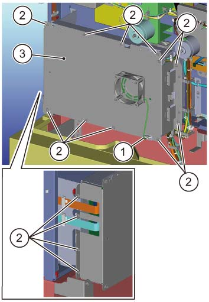
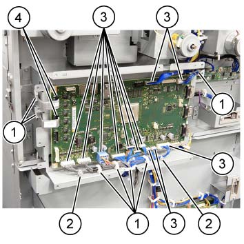
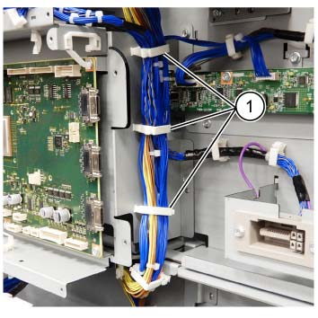
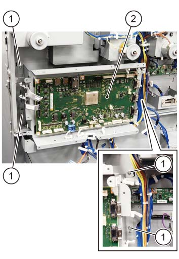
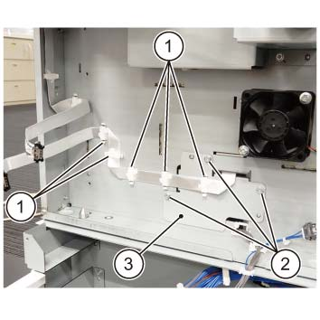
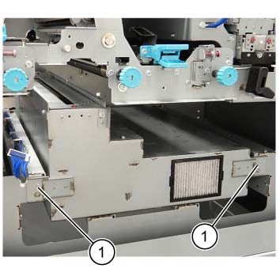
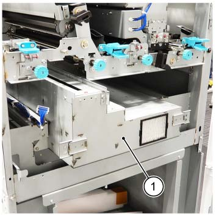

REP 76.3.1 ILS 入口 单元 
参考 PL:PL 76.3
Removal

执行IOT的[关机]步骤. 确认电源开关已关闭并拔掉电源插头.

静电可能损坏电气部件. 静电可能损坏电气部件. 维修时请始终佩戴腕带. If a wrist 条带 不是 可用的, touch 一些 metallic parts 在...之前 servicing to discharge the static electricity.
请勿 get yourself hurt by a soldered portion 在...上 后 的 PWB.
打开前盖板.
拆卸内盖板. (PL 76.1)
拆卸 入口 灯 组件. (REP 76.3.2)
拆卸 后面 上方 盖板. (PL 76.2)
拆卸板. (图 1)
拆卸螺钉（x2）.
拆卸板.

(图 1) ism476001
拆卸 PWB 盖板. (图 2)
断开 DP 风扇 连接器.
拆卸螺钉 (x15).
拆卸 PWB 盖板.

(图 2) ism476002
断开连接器 (x12) 和 the 排线 (x2) 的 ILS直流电源板. (图 3)

Push 和 释放 tab (push-button 类型) 在...的两侧 the 排线 evenly.
小心 to avoid 损坏 由于 bending 的 排线 or pinching by 机器.
释放 线束 从 卡箍 (x7).
拆卸卡箍.
断开连接器 (x12).
断开 排线 (x2).

(图 3) ism476003
释放 线束 从 卡箍 (x3). (图 4)
释放 线束 从 卡箍 (x3).

(图 4) ism476084
拆卸 ILS直流电源板 单元. (图 5)
拆卸螺钉（x4）.
拆卸 ILS直流电源板 单元.

(图 5) ism476004
释放 卡箍 (x5) holding the 排线 和 拆卸板 在...上 后面. (图 6)
推动 排线 进入 the hole of 框架.
小心 to avoid 损坏 由于 bending 的 排线 or pinching by 机器.
释放 线束 从 卡箍 (x5).
拆卸螺钉（x3）.
拆卸板 (x3).

(图 6) ism476005
拆卸螺钉（x2） 在...上 ILS 入口 单元. (图 7)
拆卸螺钉（x2）.

(图 7) ism476006
拆卸 ILS 入口 单元. (图 8)
拆卸 ILS 入口 单元.

(图 8) ism476007
安装
To 安装, carry 出 the removal steps 按相反顺序.
当...时 the ILS 入口 单元 已更换, 执行 以下 procedures.
执行 ILS 状态 显示 的 "DC809". (请参阅 IOT 手册 [DC809 ILSwSMG 标准 Setup])